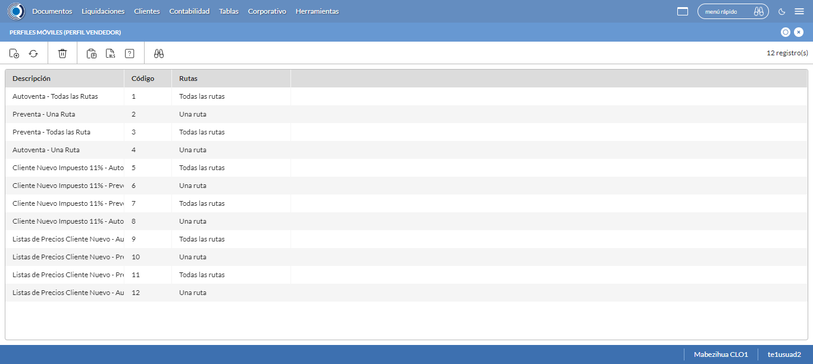
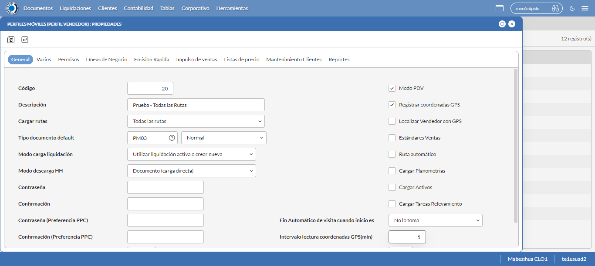
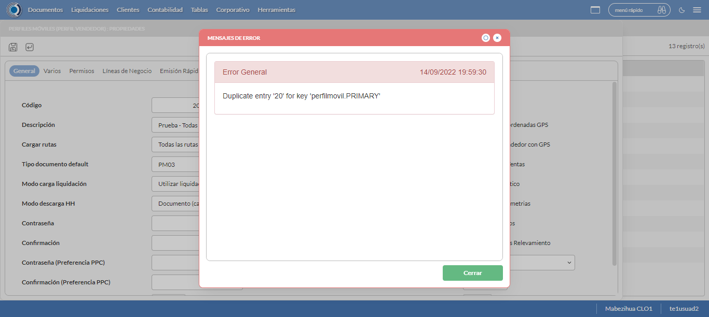
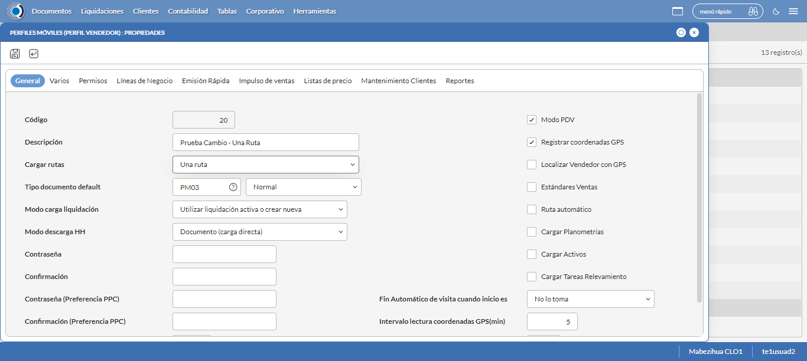
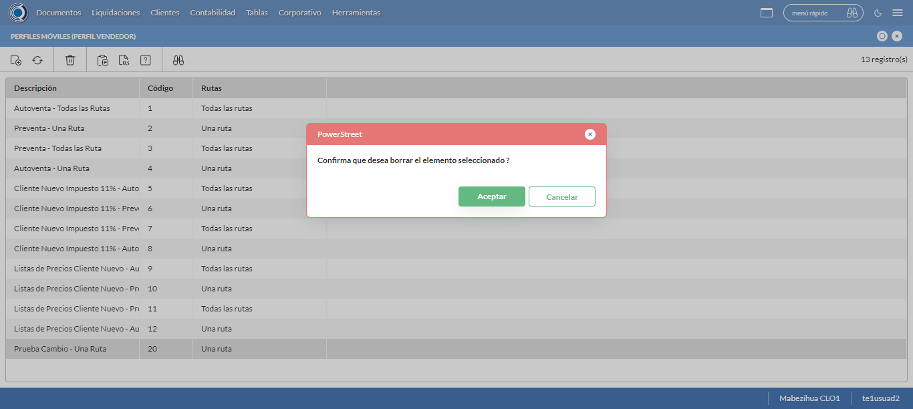

Desarrollado por : Area de Testing PWST
Fecha y hora de inicio : 2022-09-14 14:50:37
Duracion : 0:14:06.344501
Resultado : Total 8，Correctos 8 ，Taza de resultado 100.00%
Resumen 100.00% Errores 0 Fallidos 0 Correctos 8 Test realizados 8
| Caso de Prueba | Total | Correctos | Fallido | Error | Detalles | Captura del error |
| PerfilesMoviles.Test: Escenario 1 de Perfiles Moviles | 8 | 8 | 0 | 0 | Detalles | |
test |
pt1_1: 2022-09-14 14:50:39,022 - root - INFO - Se abre el chrome
2022-09-14 14:50:40,347 - root - INFO - Entra a la URL
2022-09-14 14:50:40,481 - root - INFO - Maximiza la pantalla
2022-09-14 14:50:43,529 - root - INFO - Cambia al frame
|
|
||||
test_000: Ingresa a la base de datos |
pt1_2: 2022-09-14 14:50:46,615 - root - INFO - Escribe el usuario
2022-09-14 14:50:46,714 - root - INFO - Escribe la contraseña
2022-09-14 14:50:46,855 - root - INFO - Se dio clic en el boton ingresar
2022-09-14 14:50:47,669 - root - INFO - Ejecutar Enterprise
2022-09-14 14:50:51,740 - root - INFO - Cambia entre pestañas
|
|
||||
test_001: Abre menu y ejecuta pantalla |
pt1_3: 2022-09-14 14:51:19,604 - root - INFO - Abre la pantalla de Perfiles Moviles
2022-09-14 14:51:19,674 - root - INFO - La pantalla ejecutada es Perfiles Moviles
2022-09-14 14:51:22,685 - root - INFO - Captura: C:\xampp\htdocs\versiones\automatizaciones\AutoPWST\01PM\report\img screen：20220914_14_51_22.png
2022-09-14 14:51:22,897 - root - INFO - Se presiona el boton 'Nuevo', para crear un nuevo registro.
|
 | ||||
test_002: Abre la ventana de nuevo y crear un registro |
pt1_4: 2022-09-14 14:51:27,955 - root - INFO - Se abrio la pantalla para el ingreso de un registro nuevo.
2022-09-14 14:51:27,993 - root - INFO - El campo 'Código' si se encuentra visible.
2022-09-14 14:51:28,041 - root - INFO - El campo 'Descripción' si se encuentra visible.
2022-09-14 14:51:28,079 - root - INFO - El campo 'Cargar rutas' si se encuentra visible.
2022-09-14 14:51:28,115 - root - INFO - El campo 'Tipo documento default' si se encuentra visible.
2022-09-14 14:51:28,154 - root - INFO - El campo 'Modo carga liquidación' si se encuentra visible.
2022-09-14 14:51:28,191 - root - INFO - El campo 'Modo descarga HH' si se encuentra visible.
2022-09-14 14:51:28,227 - root - INFO - El campo 'Modo PDV' si se encuentra visible.
2022-09-14 14:51:28,263 - root - INFO - El campo 'Registrar coordenadas GPS' si se encuentra visible.
2022-09-14 14:51:28,300 - root - INFO - El campo 'Fin Automático de visita cuando inicio es' si se encuentra visible.
2022-09-14 14:51:28,336 - root - INFO - El campo 'Intervalo lectura coordenadas GPS(min)' si se encuentra visible.
2022-09-14 14:51:28,393 - root - INFO - Ingresa el codigo del nuevo registro
2022-09-14 14:51:31,549 - root - INFO - Ingresa la Descripcion del nuevo registro
2022-09-14 14:51:42,985 - root - INFO - Se selecciono la opción Todas las Rutas
2022-09-14 14:51:46,108 - root - INFO - Ingresa el Tipo documento default del nuevo registro
2022-09-14 14:52:01,044 - root - INFO - Se selecciono la opción Normal
2022-09-14 14:52:12,501 - root - INFO - Se selecciono el registro de Modo carga liquidación
2022-09-14 14:52:23,955 - root - INFO - Se selecciono la opción Documento (carga directa)
2022-09-14 14:52:27,072 - root - INFO - Se dió click en el checkbox Modo PDV
2022-09-14 14:52:30,177 - root - INFO - Se dió click en el checkbox Registrar coordenadas GPS
2022-09-14 14:52:41,616 - root - INFO - Se dió click en la opción No lo toma
2022-09-14 14:52:44,730 - root - INFO - Ingresa el Intervalo lectura coordenadas GPS(min) del nuevo registro
2022-09-14 14:52:47,744 - root - INFO - Captura: C:\xampp\htdocs\versiones\automatizaciones\AutoPWST\01PM\report\img screen：20220914_14_52_47.png
2022-09-14 14:52:51,048 - root - INFO - Se hace el cambio de pestaña Varios para continuar con el registro nuevo
2022-09-14 14:52:56,135 - root - INFO - El campo 'Cargar resumen de cuentas únicamente del vendedor de la ruta' si se encuentra visible.
2022-09-14 14:52:56,173 - root - INFO - El campo 'Verificar límite de crédito' si se encuentra visible.
2022-09-14 14:52:56,210 - root - INFO - El campo 'Verificar opción guardar como' del tipo de documento' si se encuentra visible.
2022-09-14 14:52:56,249 - root - INFO - El campo 'Permitir pagos a cuenta en cancelaciones' si se encuentra visible.
2022-09-14 14:52:56,287 - root - INFO - El campo 'Disco de datos (WorkAbout)' si se encuentra visible.
2022-09-14 14:52:56,327 - root - INFO - El campo 'Tipo de Vendedor' si se encuentra visible.
2022-09-14 14:52:56,366 - root - INFO - El campo 'Enviar documentos de inmediato al servidor.' si se encuentra visible.
2022-09-14 14:52:56,434 - root - INFO - Se dió click en el checkbox Cargar resumen de cuentas únicamente del vendedor de la ruta
2022-09-14 14:52:59,527 - root - INFO - Se dió click en el checkbox Verificar límite de crédito
2022-09-14 14:53:02,635 - root - INFO - Se dió click en el checkbox Verificar opción 'guardar como' del tipo de documento
2022-09-14 14:53:05,726 - root - INFO - Se dió click en el checkbox Permitir Pagos
2022-09-14 14:53:15,867 - root - INFO - Se dió click en el botón espacio para mover la pantalla hacía abajo
2022-09-14 14:53:27,331 - root - INFO - Se selecciono el registro de Disco de Datos
2022-09-14 14:53:38,786 - root - INFO - Se dió click en la opción Autoventa
2022-09-14 14:53:41,895 - root - INFO - Se dió click en el checkbox Enviar documentos de inmediato al servidor.
2022-09-14 14:53:45,022 - root - INFO - Se hace el cambio a la pestaña Permisos para continuar con el registro nuevo
2022-09-14 14:53:50,157 - root - INFO - Se presiona el boton 'Nuevo de la pestaña Permiso' , para crear un nuevo registro.
2022-09-14 14:53:55,227 - root - INFO - El campo 'Permisos' si se encuentra visible.
2022-09-14 14:54:03,664 - root - INFO - Se dió click en la opción Inihibir Georeferenciación
2022-09-14 14:54:06,753 - root - INFO - Se presiona el boton 'Guardar de la pestaña Permiso', para guardar el registro.
2022-09-14 14:54:11,851 - root - INFO - Se hace el cambio a la pestaña Lineas de Negocio para continuar con el registro nuevo
2022-09-14 14:54:16,963 - root - INFO - Se presiona el boton 'Nuevo de la pestaña Permiso' , para crear un nuevo registro.
2022-09-14 14:54:22,044 - root - INFO - El campo 'Línea negocio' si se encuentra visible.
2022-09-14 14:54:30,513 - root - INFO - Se selecciono el registro de Linea de negocio
2022-09-14 14:54:33,608 - root - INFO - Se presiona el boton 'Guardar de la pestaña Linea de Negocio', para guardar el registro.
2022-09-14 14:54:38,698 - root - INFO - Se presiona el boton 'Nuevo de la pestaña Permiso' , para crear un nuevo registro.
2022-09-14 14:54:52,153 - root - INFO - Se selecciono el registro de Linea de negocio
2022-09-14 14:54:55,258 - root - INFO - Se presiona el boton 'Guardar de la pestaña Linea de Negocio', para guardar el registro.
2022-09-14 14:55:00,370 - root - INFO - Se presiona el boton 'Nuevo de la pestaña Permiso' , para crear un nuevo registro.
2022-09-14 14:55:13,817 - root - INFO - Se selecciono el registro de Linea de negocio
2022-09-14 14:55:16,940 - root - INFO - Se presiona el boton 'Guardar de la pestaña Linea de Negocio', para guardar el registro.
2022-09-14 14:55:22,046 - root - INFO - Se hace el cambio a la pestaña Impulso Ventas para continuar con el registro nuevo
2022-09-14 14:55:27,140 - root - INFO - Se presiona el boton 'Nuevo de la pestaña Impulso de Ventas' , para crear un nuevo registro.
2022-09-14 14:55:32,232 - root - INFO - El campo 'Artículo' si se encuentra visible.
2022-09-14 14:55:32,298 - root - INFO - Ingresa el Articulo del nuevo registro
2022-09-14 14:55:38,525 - root - INFO - Se presiona el boton 'Guardar de la pestaña Impulso de Ventas', para guardar el registro.
2022-09-14 14:55:43,603 - root - INFO - Se presiona el boton 'Nuevo de la pestaña Impulso de Ventas' , para crear un nuevo registro.
2022-09-14 14:55:48,690 - root - INFO - Ingresa el Articulo del nuevo registro
2022-09-14 14:55:54,894 - root - INFO - Se presiona el boton 'Guardar de la pestaña Impulso de Ventas', para guardar el registro.
2022-09-14 14:56:00,000 - root - INFO - Se presiona el boton 'Nuevo de la pestaña Impulso de Ventas' , para crear un nuevo registro.
2022-09-14 14:56:05,148 - root - INFO - Ingresa el Articulo del nuevo registro
2022-09-14 14:56:11,350 - root - INFO - Se presiona el boton 'Guardar de la pestaña Impulso de Ventas', para guardar el registro.
2022-09-14 14:56:16,415 - root - INFO - Se presiona el boton 'Nuevo de la pestaña Impulso de Ventas' , para crear un nuevo registro.
2022-09-14 14:56:21,516 - root - INFO - Ingresa el Articulo del nuevo registro
2022-09-14 14:56:27,671 - root - INFO - Se presiona el boton 'Guardar de la pestaña Impulso de Ventas', para guardar el registro.
2022-09-14 14:56:32,765 - root - INFO - Se presiona el boton 'Nuevo de la pestaña Impulso de Ventas' , para crear un nuevo registro.
2022-09-14 14:56:37,864 - root - INFO - Ingresa el Articulo del nuevo registro
2022-09-14 14:56:44,080 - root - INFO - Se presiona el boton 'Guardar de la pestaña Impulso de Ventas', para guardar el registro.
2022-09-14 14:56:49,189 - root - INFO - Se hace el cambio a la pestaña Mantenimiento Clientes para continuar con el registro nuevo
2022-09-14 14:56:54,278 - root - INFO - El campo 'Permiso agregar nuevos clientes' si se encuentra visible.
2022-09-14 14:56:54,316 - root - INFO - El campo 'Permiso modificar clientes existentes' si se encuentra visible.
2022-09-14 14:56:54,356 - root - INFO - El campo 'Ruta referencia' si se encuentra visible.
2022-09-14 14:56:54,441 - root - INFO - Se dió click en el checkbox Permiso agregar nuevos clientes
2022-09-14 14:56:57,534 - root - INFO - Se dió click en el checkbox Permiso modificar clientes existentes
2022-09-14 14:57:09,002 - root - INFO - Se selecciono el registro de Ruta Referencia
2022-09-14 14:57:12,124 - root - INFO - Se dió click en el checkbox Clasificación 1
2022-09-14 14:57:15,210 - root - INFO - Se dió click en el checkbox Clasificación 2
2022-09-14 14:57:18,322 - root - INFO - Se dió click en el checkbox Clasificación 3
2022-09-14 14:57:21,430 - root - INFO - Se dió click en el checkbox Colonia
2022-09-14 14:57:24,553 - root - INFO - Se dió click en el checkbox Codigo Postal
2022-09-14 14:57:27,676 - root - INFO - Se dió click en el checkbox Direccion
2022-09-14 14:57:30,798 - root - INFO - Se dió click en el checkbox Entorno PDV
2022-09-14 14:57:33,913 - root - INFO - Se dió click en el checkbox Esquina 1
2022-09-14 14:57:37,041 - root - INFO - Se dió click en el checkbox Esquina 2
2022-09-14 14:57:40,154 - root - INFO - Se dió click en el checkbox Paises
2022-09-14 14:57:43,271 - root - INFO - Se dió click en el checkbox Departamento
2022-09-14 14:57:46,378 - root - INFO - Se dió click en el checkbox Localidad
2022-09-14 14:57:49,505 - root - INFO - Se da clic en el boton Guardar; se debe crear un nuevo registro.
|
 | ||||
test_003: Repite el Registro |
pt1_5: 2022-09-14 14:57:54,591 - root - INFO - Se presiona el boton 'Refrescar', para crear un nuevo registro igual al anterior.
2022-09-14 14:57:59,679 - root - INFO - Se presiona el boton 'Nuevo', para crear un nuevo registro igual al anterior.
2022-09-14 14:58:07,724 - root - INFO - Se abrio la pantalla para el ingreso de un registro nuevo.
2022-09-14 14:58:07,784 - root - INFO - Ingresa el codigo del nuevo registro
2022-09-14 14:58:10,916 - root - INFO - Ingresa la Descripcion del nuevo registro
2022-09-14 14:58:22,305 - root - INFO - Se selecciono la opción Todas las Rutas
2022-09-14 14:58:25,424 - root - INFO - Ingresa el Tipo documento default del nuevo registro
2022-09-14 14:58:40,251 - root - INFO - Se selecciono la opción Normal
2022-09-14 14:58:51,695 - root - INFO - Se selecciono el registro de Modo carga liquidación
2022-09-14 14:59:03,134 - root - INFO - Se selecciono la opción Documento (carga directa)
2022-09-14 14:59:06,219 - root - INFO - Se dió click en el checkbox Modo PDV
2022-09-14 14:59:09,297 - root - INFO - Se dió click en el checkbox Registrar coordenadas GPS
2022-09-14 14:59:20,689 - root - INFO - Se dió click en la opción No lo toma
2022-09-14 14:59:23,795 - root - INFO - Ingresa el Intervalo lectura coordenadas GPS(min) del nuevo registro
2022-09-14 14:59:29,899 - root - INFO - Se da clic en el boton Guardar; NO se debe crear un nuevo registro.
2022-09-14 14:59:34,944 - root - INFO - Captura: C:\xampp\htdocs\versiones\automatizaciones\AutoPWST\01PM\report\img screen：20220914_14_59_34.png
2022-09-14 14:59:35,163 - root - INFO - Se presiona el boton 'Cerrar', para cerrar el mensaje de duplicidad de llave primaria
2022-09-14 14:59:40,246 - root - INFO - Se presiona el boton 'Cerrar', para cerrar la ventana
|
 | ||||
test_004: Modificar el registro |
pt1_6: 2022-09-14 14:59:49,331 - root - INFO - Se presiona el boton 'Refrescar', para proceder a modificar el registro.
2022-09-14 14:59:53,947 - root - INFO - Se da clic en el registro creado, para proceder a modificarlo.
2022-09-14 14:59:59,115 - root - INFO - Se modifica el contenido del campo Observaciones 1
2022-09-14 15:00:10,582 - root - INFO - Se selecciono la opción Una Ruta
2022-09-14 15:00:13,594 - root - INFO - Captura: C:\xampp\htdocs\versiones\automatizaciones\AutoPWST\01PM\report\img screen：20220914_15_00_13.png
2022-09-14 15:00:13,830 - root - INFO - Se hace el cambio de pestaña Permisos para continuar con la modificación del registro
2022-09-14 15:00:18,933 - root - INFO - Se presiona el boton 'Nuevo de la pestaña Permiso' , para crear un nuevo registro.
2022-09-14 15:00:32,396 - root - INFO - Se dió click en la opción Anular Documentos
2022-09-14 15:00:35,510 - root - INFO - Se presiona el boton 'Guardar de la pestaña Permiso', para guardar el registro.
2022-09-14 15:00:40,628 - root - INFO - Se hace el cambio a la pestaña Lineas de Negocio para continuar con la modificación del registro
2022-09-14 15:00:45,746 - root - INFO - Se hace el cambio de pestaña Impulso Ventas para continuar con la modificación del registro
2022-09-14 15:00:55,374 - root - INFO - Se da clic en el registro creado, para proceder a modificarlo.
2022-09-14 15:01:03,484 - root - INFO - Se presiona el boton 'Eliminar de Impulso Ventas', para eliminar el primer registro.
2022-09-14 15:01:08,086 - root - INFO - Se da clic en el registro creado, para proceder a modificarlo.
2022-09-14 15:01:16,201 - root - INFO - Se presiona el boton 'Eliminar de Impulso Ventas', para eliminar el segundo registro.
2022-09-14 15:01:20,824 - root - INFO - Se da clic en el registro creado, para proceder a modificarlo.
2022-09-14 15:01:28,946 - root - INFO - Se presiona el boton 'Eliminar de Impulso Ventas', para eliminar el tercer registro.
2022-09-14 15:01:33,552 - root - INFO - Se da clic en el registro creado, para proceder a modificarlo.
2022-09-14 15:01:41,626 - root - INFO - Se presiona el boton 'Eliminar de Impulso Ventas', para eliminar el cuarto registro.
2022-09-14 15:01:46,246 - root - INFO - Se da clic en el registro creado, para proceder a modificarlo.
2022-09-14 15:01:54,337 - root - INFO - Se presiona el boton 'Eliminar de Impulso Ventas', para eliminar el quinto registro.
2022-09-14 15:01:54,464 - root - INFO - Se da clic en el boton Guardar; se debe modificar la informacion del registro.
|
 | ||||
test_005: Eliminar el registro creado |
pt1_7: 2022-09-14 15:01:59,560 - root - INFO - Se presiona el boton 'Refrescar', para proceder a eliminar el registro.
2022-09-14 15:02:09,195 - root - INFO - Se da clic en el registro creado, para proceder a eliminarlo.
2022-09-14 15:02:12,307 - root - INFO - Se hace el cambio de pestaña Permisos para continuar con la eliminación del registro
2022-09-14 15:02:21,943 - root - INFO - Se da clic en el primer registro de Permisos, para proceder a eliminarlo.
2022-09-14 15:02:30,070 - root - INFO - Se presiona el boton 'Eliminar de Permiso', para eliminar el segundo registro.
2022-09-14 15:02:34,697 - root - INFO - Se da clic en el segundo registro de Permisos, para proceder a Eliminarlo.
2022-09-14 15:02:42,786 - root - INFO - Se presiona el boton 'Eliminar de Permiso', para eliminar el segundo registro.
2022-09-14 15:02:42,897 - root - INFO - Se hace el cambio a la pestaña Lineas de Negocio para continuar con la eliminación del registro
2022-09-14 15:02:52,513 - root - INFO - Se da clic en el primer registro de Linea de Negocio, para proceder a Eliminarlo.
2022-09-14 15:03:00,640 - root - INFO - Se presiona el boton 'Eliminar de Linea de Negocio', para eliminar el primer registro.
2022-09-14 15:03:05,246 - root - INFO - Se da clic en el segundo registro Linea de negocio, para proceder a Eliminarlo.
2022-09-14 15:03:13,364 - root - INFO - Se presiona el boton 'Eliminar de Linea de Negocio', para eliminar el segundo registro.
2022-09-14 15:03:17,995 - root - INFO - Se da clic en el tercer registro Lineas de Negocio, para proceder a Eliminarlo.
2022-09-14 15:03:26,138 - root - INFO - Se presiona el boton 'Eliminar de Linea de Negocio', para eliminar el tercer registro.
2022-09-14 15:03:26,255 - root - INFO - Se hace el cambio a la pestaña Mantenimiento Clientes para continuar con la eliminación del registro
2022-09-14 15:03:31,398 - root - INFO - Se dió click en el checkbox Clasificación 1
2022-09-14 15:03:34,541 - root - INFO - Se dió click en el checkbox Clasificación 2
2022-09-14 15:03:37,677 - root - INFO - Se dió click en el checkbox Clasificación 3
2022-09-14 15:03:40,805 - root - INFO - Se dió click en el checkbox Colonia
2022-09-14 15:03:43,951 - root - INFO - Se dió click en el checkbox Codigo Postal
2022-09-14 15:03:47,080 - root - INFO - Se dió click en el checkbox Direccion
2022-09-14 15:03:50,229 - root - INFO - Se dió click en el checkbox Entorno PDV
2022-09-14 15:03:53,361 - root - INFO - Se dió click en el checkbox Esquina 1
2022-09-14 15:03:56,494 - root - INFO - Se dió click en el checkbox Esquina 2
2022-09-14 15:03:59,636 - root - INFO - Se dió click en el checkbox Paises
2022-09-14 15:04:02,752 - root - INFO - Se dió click en el checkbox Departamento
2022-09-14 15:04:05,902 - root - INFO - Se dió click en el checkbox Localidad
2022-09-14 15:04:09,034 - root - INFO - Se da clic en el boton Guardar; se debe modificar la informacion del registro.
2022-09-14 15:04:18,670 - root - INFO - Se da clic en el registro creado, para proceder a eliminarlo.
2022-09-14 15:04:26,764 - root - INFO - Se presiona el boton 'Eliminar', para eliminar el registro.
2022-09-14 15:04:26,766 - root - INFO - Captura: C:\xampp\htdocs\versiones\automatizaciones\AutoPWST\01PM\report\img screen：20220914_15_04_26.png
2022-09-14 15:04:26,974 - root - INFO - Se confirma el eliminado del registro
2022-09-14 15:04:32,084 - root - INFO - Se presiona el boton 'Refrescar', para verificar si el registro ha sido eliminado.
2022-09-14 15:04:37,185 - root - INFO - Se presiona el boton 'Cerrar', para cerrar la pantalla de Perfiles Moviles.
|
 | ||||
test_006: Cerrar_Navegador |
pt1_8: 2022-09-14 15:04:43,939 - root - INFO - Se cierra chrome
|
|
||||
| Caso de prueba | 8 | 8 | 0 | 0 | Taza de resultado：100.00% | |